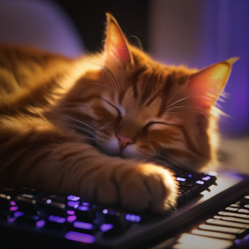
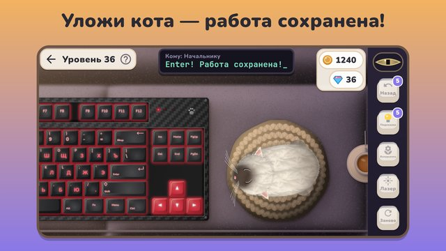

Кот на клаве
Пушистый кот уснул на клавиатуре и печатает начальнику «ывввввв». Убери его — но так, чтобы не проснулся!
Медленно, лапка за лапкой, уложи лапы, голову и хвост, а потом перенеси соню на мягкую подушку. Следи за кошачьим глазом: резкое движение или живот — и кот проснётся с громким «Мяу!».

- 300 уровней в 12 местах: кухня, диван, офис, кафе, поезд, серверная, космос.
- 40 окрасов котов, от крошечных котят до огромного кота-директора.
- Десятки клавиатур: механические с подсветкой, ноутбуки, синтезатор, печатная машинка.
- Кот дня, задания и альбом всех котов.
- Без таймера и без интернета, на русском и английском.